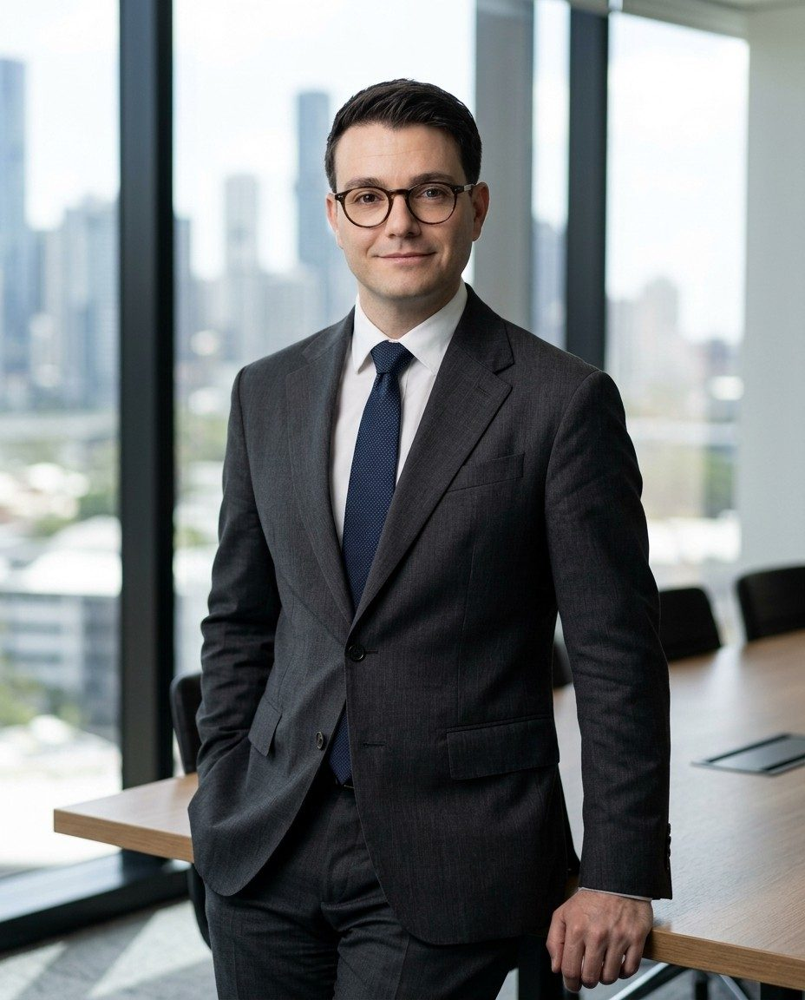
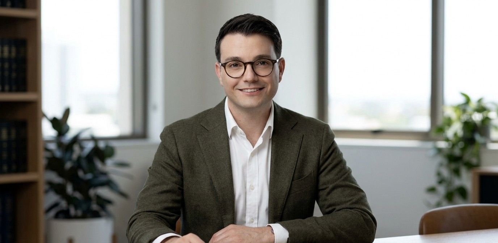

SurrogacyA
Surrogacy
Domestic and international surrogacy, from the first consultation to the parentage order.
- Surrogacy arrangements and advice
- Parentage orders
- International surrogacy and the return home

Lawyer at Page Provan Family and Fertility Lawyers, Brisbane. Surrogacy, fertility and family law for families in Queensland, New South Wales and Victoria.
I am a lawyer at Page Provan Family and Fertility Lawyers in Brisbane, working directly with director Stephen Page. My practice has two parts: surrogacy and fertility law, and family law.
In surrogacy I work on files from the first consultation through to parentage orders in the Childrens Court of Queensland, for intended parents and birth parents, and assist on matters in New South Wales and Victoria. In family law I act in parenting, property and financial agreement matters in the Federal Circuit and Family Court of Australia.
My Australian career began on the Gold Coast at Gall Standfield & Smith, in wills, estates and conveyancing. I then worked inside the profession’s regulator, in the External Interventions team at the Queensland Law Society, and gained courtroom experience in criminal defence at Ashworth Lawyers before joining Page Provan in 2026.
I completed the law studies required for admission in Queensland at QUT and USQ while working full time, then the Graduate Diploma of Legal Practice, and was admitted in 2026. Before moving to Australia I was admitted to the Istanbul Bar in 2018. I work with clients in English, Turkish and French.

Domestic and international surrogacy, from the first consultation to the parentage order.
Where medicine, consent and family law meet.
Parenting and property matters in the Federal Circuit and Family Court of Australia.
Before Australia · İstanbul, 2014 to 2019 · Istanbul Bar Association, 2018
General information only. Not legal advice.
Need legal help? Please contact Page Provan Family and Fertility Lawyers directly. I do not provide legal services in my own right, and nothing on this website creates a lawyer and client relationship.